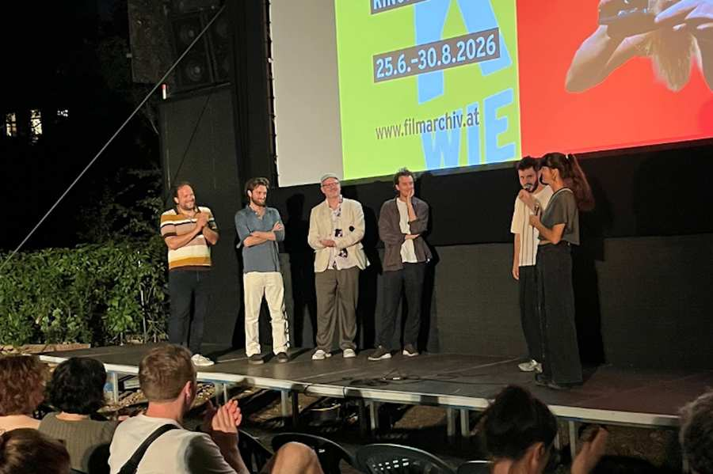

культура
Новости культуры

Мирна Функ вдохновляет своим новым романом «Балаган»
Успешный и вдохновляющий книжный вечер в ЗиБе: Автор бестселлеров Мирна Функ представила свой нынешний роман «Балаган...

«Список страны Оз»: специальный киновечер 7 октября
Аншлаговый кинотеатр в метро, фильм о необычайном мужестве и личной встрече с человеком, пережившим события 7 октября...

«Вальсируя в облаках»: Музыкальное начало нового года
Аншлаг и отличная атмосфера в ЗиБе: 24 сентября в Бадене состоялся специальный музыкальный вечер, посвященный началу нового года...

Еврейский новогодний концерт: успешное начало Рош ха-Шана
Под девизом «Лехаим – к жизни» Israelitische Kultusgemeinde Wien (Еврейская община Вены) отпраздновал начало еврейского Нового года 8 сентября в MuTh...

Фильм встречается с диалогом: «Мешугге» в ЗиБе
26 августа состоится продолжение серии мероприятий Film Meets Dialogue с фильмом «М...

НОГА в кино Как никогда раньше – Нога Эрез лично в гостях
Аншлаговый показ документального фильма «НОГА» 19 августа начался с особенной встречи: Нога Эрез приветствовала зрителей перед фильмом...

Фильм встречается с диалогом: путешествие во времени между традицией и современностью в ЗиБе
Показ фильма «Американский огурец» вызвал большой интерес и собрал очень много зрителей.

Еврейский уличный фестиваль на Юденплац, наполненный музыкой, танцами и встречами
14 июня, в приятную летнюю погоду, Юденплац вновь стала ареной оживленного праздника встреч.
События


Живо, разнообразно и объединяюще – таков девиз культурной программы IKG.Kultur, отдела культуры Israelitische Kultusgemeinde Wien (Еврейская община Вены).
Культурная работа нашей общины чрезвычайно многогранна: важно преодолеть разрыв между прошлой, перемещенной, почти исчезнувшей восточно- и центральноевропейской еврейской культурой со времен до Холокоста через настоящее к будущей международной еврейской культуре.
Посредством таких форматов мероприятий, как Еврейский уличный фестиваль, Концерт Кантора или Еврейский новогодний концерт, мы показываем живое разнообразие еврейской культуры и в то же время являемся посредниками между еврейской и нееврейской общественностью.
Мы также идем по этому пути открытости и встреч из-за новых и возрождающихся антисемитских настроений во всем мире.
Понимание и принятие друг друга, предотвращение возникновения предрассудков в первую очередь – как вам это удается в современном радикальном мире? Мы пытаемся изучить разнообразие современного еврейского искусства и культуры.
Основные события 2026 года
Менделе Лоэнгрин — клезмер Зингшпиль
Еврейский уличный фестиваль
Еврейский новогодний концерт
Канториальный концерт
Познакомьтесь с еврейской культурой

Идиш для начинающих
В этом онлайн-формате Роман Гринберг объясняет идишские термины и фразы в своем неповторимом и юмористическом стиле.
БолееПодкаст «Наглость» – молодой и в чем-то еврейский
Серия подкастов «ЧУЗПЕ – молодые и в чем-то еврейские» в 15 эпизодах объединяет перед микрофоном молодые еврейские голоса из сферы искусства и культуры.
Более
Еврейский уличный фестиваль
Уличным фестивалем мы отмечаем многообразие еврейской жизни. Многочисленные еврейские организации и учреждения предлагают информацию о ее работе. Помимо театральных представлений, живой музыки и детских программ, здесь есть кошерная кухня и еврейские народные танцы.
Более

Еврейский новогодний концерт
Новое событие в культурном календаре с 2022 года. Каждый может отпраздновать жизнь и разнообразие вместе с еврейской общиной. В этом году еврейский новогодний концерт состоится 1 октября.
Более
Канториальный концерт
На ежегодном канторском концерте венская публика сможет вживую ощутить искусство канторского пения хазанут. Со старшим кантором Шмуэлем Барзилай и специальным гостем.
Более